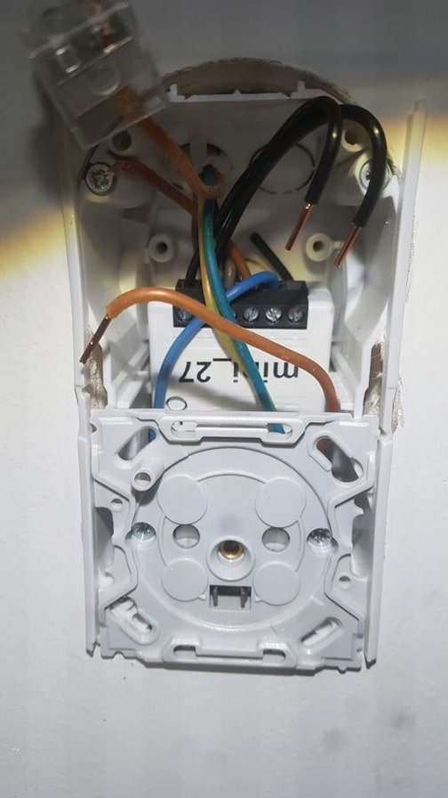

Tasmota SwitchMode 11/12 Example - v1.1
Updated August, 2020. Changelog at last page
Tasmota SwitchMode 11/12 wall switch implementation with Home Assistant / ControllerX
Want to make your 'dumb' wall switches smart and at the same time improve installation of smart lights WAF 👩🦰 ? Then the solution could be to 'Tasmotize' your wall switches, and use Home Assistant with the ControllerX app to control the smart light connected to that switch. With this setup, you'll be able to toggle, turn lights on at full brightness, sync and dim your lights directly from your wall switch. Today, many WIFI switches are so small, that they can fit behind wall outlets/switches or in ceiling outlets. Personally, I've used Shelly One devices and Itead Sonoff Mini's. Both are easy to flash with Tasmota using either USB-to-UART adapter or directly OTA. No soldering is actually needed these days. The flash part and build instructions are too comprehensive to elaborate on further in this documentation. Instructions are 'out there' - Google it! 😉
One of my Sonoff Mini installations behind a wall switch. Danish wall switch modules are typically not larger than appx. 50x50mm pr. module (outside measurements). I’ve LK Opus 66 installed, which is a slightly larger type measuring 66mm in width. Still I can squeeze a Sonoff Mini in behind a ‘typical’ double module wall switch. Shelly devices are a bit smaller, round in shape and in general easier to fit than the Sonoff Mini’s.

One final warning: Using Shelly/Sonoff devices behind wall switches/outlets involves fiddling with ⚡HIGH VOLTAGE⚡ that could potentially INJURE OR KILL YOU 🩸😱💀, if not handled/installed correctly !! Furthermore, local building code might prohibit use of such devices in wall outlets and unauthorized installation will most likely be illegal in most countries. If you don't know EXACTLY what you're doing - then DON'T proceed with this project !! Now you've been warned !!
Following example is with a Shelly One device, placed in the wall socket behind the switch, to control an Ikea WS bulb in the ceiling outlet. The bulb is connected to Home Assistant via Zigbee2MQTT. I've refitted my wall switch with a spring, so it'll act like a push button.
The Switchmode11/12 option in Tasmota, gives the user six different switch commands to be used for automation. With ControllerX only four of these commands are needed, as ControllerX internally controls changes in dimming direction. These commands (events) are sent directly to ControllerX via MQTT.
Switchmode11/12 Tasmota output commands are:
Switchstate=2: toggle (Normal TOGGLE function. One single press)
Switchstate=4: inc-dec (HOLD function. Sent after delay defined with Setoption32)
Switchstate=5: inv (INVERSE dim direction function. Not used in this implementation, as ControllerX handles this internally)
Switchstate=6: clear (Delayed RELEASE function. Sent when button is released AFTER delay defined with Setoption32. Not used in this implementation)
Switchstate=7: clear (Normal RELEASE function. Sent immediately after button is released)
Switchstate=8: double (DOUBLE press function. Two consecutive presses within time delay defined with SetOption32)
Requirements:
Tasmota: v8.4.0.2 or newer
ControllerX: v3.4.0b1 or newer
Shelly device Tasmota setup (Use switchmode 11 !!):
Module type: Shelly 1 (46):
Sonoff Mini device Tasmota setup (Use switchmode 12 !!):
Module type: Sonoff Basic (1)
GPIO4: Switch1 (9)
Setup ControllerX app:
Both examples listed below will:
- toggle light(s) upon single button press
- dim light(s) up/down when button is held
- Turn light(s) on at full brightness upon double press
First example is with two separate controllers. This will also handle HOLD FROM LIGHTS OFF situation. Which, when lights are off, will SYNC light/lights when button is held for 0,8 sec.
ControllerX apps.yaml example no. 1:
controller_switchmode11_on:
module: controllerx
class: LightController
controller: tasmota_topic # Normally z2m friendly name. Here topic used in Tasmota rules
integration: state
name: z2m
listen_to: mqtt
action_key: action # Defaults to action if not specified
light: light.your_light # define your own light entity
constrain_input_boolean: light.your_light,on # This whole configuration will work when the light is on
mapping:
toggle: toggle
inc-dec: hold_brightness_toggle
clear: release
double: on_full_brightness
controller_switchmode11_off:
module: controllerx
class: LightController
controller: tasmota_topic # Normally z2m friendly name. Here topic used in Tasmota rules
integration: state
name: z2m
listen_to: mqtt
action_key: action # Defaults to action if not specified
light: light.your_light # define your own light entity
constrain_input_boolean: light.your_light,off # This whole configuration will work when the light is off
mapping:
toggle: toggle
inc-dec: sync
double: on_full_brightness
Second example is a more simple setup, where smooth_power_on is enabled instead, when button is held from lights off position.
ControllerX apps.yaml example no. 2:
tasmota_switchmode11:
module: controllerx
class: LightController
controller: tasmota_topic # Normally z2m friendly name. Here topic used in Tasmota rules
integration: state
name: z2m
listen_to: mqtt
action_key: action # Defaults to action if not specified
smooth_power_on: true # enable 'smooth power on' feature when button is held from lights off
delay: 250 # change delay if you want faster/slower dimming response (default: 350 ms.)
light: light.your_light # define your own light entity
mapping:
toggle: toggle
inc-dec: hold_brightness_toggle
clear: release
double: on_full_brightness
Notes on Appdaemon and HA's state machine:
Things unfortunately take time when HA's state machine is involved! This can be noticeable for some (for others not), when AppDaemon apps have to check HA states, e.g. by using constrain_input_boolean (as in example 1) or change HA states by toggling lights. In my setup, using a constrain_input_boolean adds some 100 ms. delay on execution. Not much on its own, but still worth to keep in mind. Toggling lights via HA automation is also some 100 ms. faster than toggling through Appdaemon/ControllerX. So in order to get the fastest possible toggle of lights, I'm personally using a simple HA automation for toggling lights and let ControllerX handle everything else 🙂
Optional HA toggle automation below.
Remember to remove toggle from mapping in Appdaemon/ControllerX apps.yaml 😉
# Toggle lights through HA using direct MQTT events. Quicker response than using platform state or directly in appdaemon ControllerX app
- alias: tasmota_switchmode11_toggle
trigger:
platform: mqtt
topic: zigbee2mqtt/tasmota_topic
payload: "{\"action\": \"toggle\"}" # escape characters needed !
action:
service: light.toggle
data:
entity_id:
light.your_light
Setup needed commands and rules in Tasmota software via console:
Powerretain1 1 Retain Tasmota power settings in HA in event of power outage
Setoption1 1 Allow only single, double and hold press button actions
Setoption32 8 Delay for HOLD button (in 0,1 sec.). I use 8 = 0,8 sec. Max value allowed is 63 !!
Setoption34 50 Minimize delay between backlog commands to 50 ms. (Default 200 ms.)
Switchtopic 0 Disable switchtopic. Needed when using rules in Tasmota.
Switchmode1 11 Set Tasmota to switchmode11
RULE1
on switch1#state=2 do publish zigbee2mqtt/tasmota_topic {"action": "toggle"} endon
on switch1#state=8 do publish zigbee2mqtt/tasmota_topic {"action": "double"} endon
on switch1#state=7 do backlog publish zigbee2mqtt/tasmota_topic {"action": "clear"};rule3 1 endon
RULE2
on mqtt#disconnected do rule1 0 endon
on mqtt#connected do rule1 1 endon
RULE3 5
on switch1#state=4 do backlog publish zigbee2mqtt/tasmota_topic {"action": "inc-dec"};rule3 0 endon
NB: Note the extra decimal '5' in RULE3 !!
RULE1 sends the TOGGLE and DOUBLE press command via MQTT . CLEAR command is fired upon button release and RULE3 is enabled again (ready for next HOLD command).
RULE2 handles the 'fall back' to direct switch control if MQTT server is unavailable. Nice WAF feature, if HA/MQTT server is down. Then lights still can be toggled on/off using the wall switch.
RULE3 sends the HOLD command and disables itself (to ensure only one HOLD command is fired).
RULE3 is set as 'run once' in Tasmota (with the decimal 5 after the rule number) to prevent extra HOLD commands from being fired before the rule is disabled.
Rules also need to be 'escaped', if used with HA automation. Tasmota will automatically add needed escape characters, if rules are entered without.
Changelog:
doc v1.0:
- Initial example documentation May, 2020
doc v1.1:
- Deprecated use of custom controllers in example. These will shortly be deprecated as well in ControllerX
- Changed from HA sensor state to official z2m MQTT event implementation using JSON objects (speed improvement!)
- New switchmode 11/12
DOUBLEpress command implemented
This example was provided by @htvekov